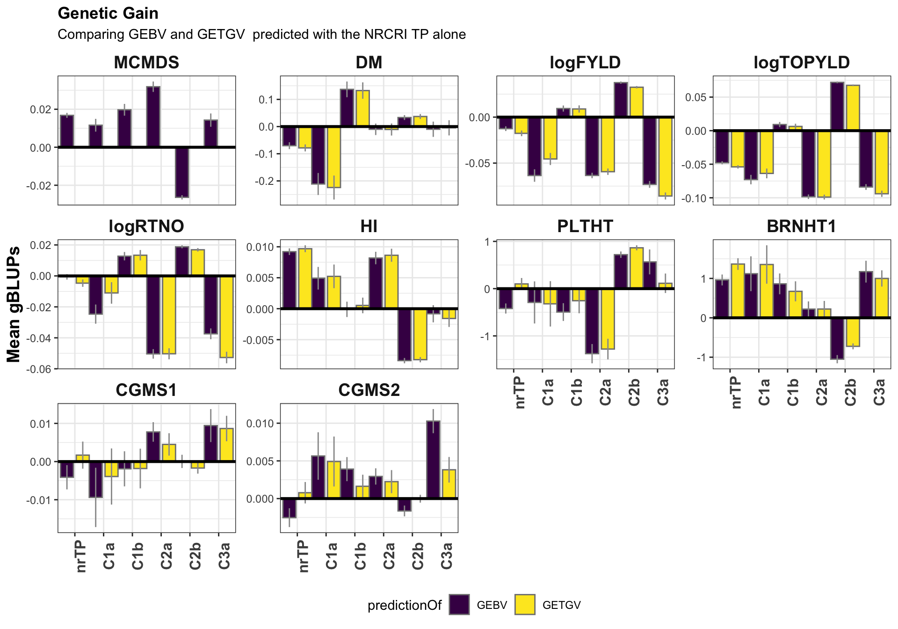

Results
2020-October-15
Last updated: 2020-10-16
Checks: 7 0
Knit directory: NRCRI_2020GS/
This reproducible R Markdown analysis was created with workflowr (version 1.6.2). The Checks tab describes the reproducibility checks that were applied when the results were created. The Past versions tab lists the development history.
Great! Since the R Markdown file has been committed to the Git repository, you know the exact version of the code that produced these results.
Great job! The global environment was empty. Objects defined in the global environment can affect the analysis in your R Markdown file in unknown ways. For reproduciblity it’s best to always run the code in an empty environment.
The command set.seed(20200421) was run prior to running the code in the R Markdown file. Setting a seed ensures that any results that rely on randomness, e.g. subsampling or permutations, are reproducible.
Great job! Recording the operating system, R version, and package versions is critical for reproducibility.
Nice! There were no cached chunks for this analysis, so you can be confident that you successfully produced the results during this run.
Great job! Using relative paths to the files within your workflowr project makes it easier to run your code on other machines.
Great! You are using Git for version control. Tracking code development and connecting the code version to the results is critical for reproducibility.
The results in this page were generated with repository version 977f389. See the Past versions tab to see a history of the changes made to the R Markdown and HTML files.
Note that you need to be careful to ensure that all relevant files for the analysis have been committed to Git prior to generating the results (you can use wflow_publish or wflow_git_commit). workflowr only checks the R Markdown file, but you know if there are other scripts or data files that it depends on. Below is the status of the Git repository when the results were generated:
Ignored files:
Ignored: .DS_Store
Ignored: .Rhistory
Ignored: .Rproj.user/
Ignored: analysis/.DS_Store
Ignored: data/.DS_Store
Ignored: output/.DS_Store
Untracked files:
Untracked: CrossValidationFunction_PlusNRCRI_2020GSnotes.gslides
Untracked: data/DatabaseDownload_2020Oct13/
Untracked: data/chr1_RefPanelAndGSprogeny_ReadyForGP_72719.fam
Untracked: output/Kinship_AA_NRCRI_2020April27.rds
Untracked: output/Kinship_AD_NRCRI_2020April27.rds
Untracked: output/Kinship_AD_NRCRI_2020Oct15.rds
Untracked: output/Kinship_A_NRCRI_2020April27.rds
Untracked: output/Kinship_A_NRCRI_2020Oct15.rds
Untracked: output/Kinship_DD_NRCRI_2020April27.rds
Untracked: output/Kinship_D_NRCRI_2020April27.rds
Untracked: output/Kinship_D_NRCRI_2020Oct15.rds
Untracked: workflowr_log.R
Note that any generated files, e.g. HTML, png, CSS, etc., are not included in this status report because it is ok for generated content to have uncommitted changes.
These are the previous versions of the repository in which changes were made to the R Markdown (analysis/10-Results.Rmd) and HTML (docs/10-Results.html) files. If you’ve configured a remote Git repository (see ?wflow_git_remote), click on the hyperlinks in the table below to view the files as they were in that past version.
| File | Version | Author | Date | Message |
|---|---|---|---|---|
| Rmd | 977f389 | wolfemd | 2020-10-16 | Publish NRCRI imputations for 2020 (DCas20_5510 and DCas20_5440) plus a |
Raw data
Summary of the number of unique plots, locations, years, etc. in the cleaned plot-basis data. See here for details..
library(tidyverse); library(magrittr);
rawdata<-readRDS(file=here::here("output","NRCRI_ExptDesignsDetected_2020Oct13.rds"))
rawdata %>%
summarise(Nplots=nrow(.),
across(c(locationName,studyYear,studyName,TrialType,GID), ~length(unique(.)),.names = "N_{.col}")) %>%
rmarkdown::paged_table()Break down the plots based on the trial design and TrialType (really a grouping of the population that is breeding program specific), captured by two logical variables, CompleteBlocks and IncompleteBlocks.
rawdata %>%
count(TrialType,CompleteBlocks,IncompleteBlocks) %>%
spread(TrialType,n) %>%
rmarkdown::paged_table()BLUPs
library(tidyverse); library(magrittr);
dbdata<-readRDS(file=here::here("output","nrcri_blupsForModelTraining_twostage_asreml_2020Oct13.rds"))
dbdata %>%
mutate(Nclones=map_dbl(blups,~nrow(.)),
NoutliersRemoved=map2_dbl(outliers1,outliers2,~length(.x)+length(.y))) %>%
relocate(c(Nclones,NoutliersRemoved),.after = Trait) %>% select(-blups,-varcomp,-outliers1,-outliers2) %>%
mutate(across(is.numeric,~round(.,4))) %>%
rmarkdown::paged_table()Prediction accuracy.
- Check prediction accuracy: Evaluate prediction accuracy with cross-validation.
- Compare prediction accuracy with vs. without IITA’s training data to augment.
used (Mb) gc trigger (Mb) limit (Mb) max used (Mb)
Ncells 1126298 60.2 2085370 111.4 NA 2085370 111.4
Vcells 1992436 15.3 8388608 64.0 102400 5405596 41.3library(tidyverse); library(magrittr);
cv<-readRDS(here::here("output","cvresults_A_nrOnly_2020Oct15.rds")) %>%
bind_rows(readRDS(here::here("output","cvresults_A_iitaAugmented_2020Oct15.rds"))) %>%
bind_rows(readRDS(here::here("output","cvresults_ADE_nrOnly_2020Oct15.rds"))) %>%
bind_rows(readRDS(here::here("output","cvresults_ADE_iitaAugmented_2020Oct15.rds"))) %>%
# the ADE model failed for most CV folds for MCMDS-IITAaugmented
# but not for any other case
# I am not sure why.
# So I also ran model AD for IITAaugmented again
# no problem there
bind_rows(readRDS(here::here("output","cvresults_AD_iitaAugmented_2020Oct15.rds"))) %>%
unnest(CVresults) %>%
select(-splits,-accuracy)
traits<-c("MCMDS","DM","logFYLD","logTOPYLD","logRTNO","HI","PLTHT","BRNHT1","CGM","CGMS1","CGMS2")
cv %<>%
mutate(Trait=factor(Trait,levels=traits),
GroupName=factor(GroupName,levels=c("nrTP","C1a","C1b","C2a","C2b")),
Dataset=factor(Dataset,levels=c("NRalone","IITAaugmented")),
modelType=factor(modelType,levels=c("A","AD","ADE")))Table of mean accuracies
cv %>%
group_by(Trait,GroupName,Dataset) %>%
# use accGETGV. For modelA we GETGV==GEBV. For modelADE we don't want GEBV, just GETGV.
summarize(meanAccuracy=mean(accGETGV,na.rm=T),
lower5pct=quantile(accGETGV,probs = c(0.05),na.rm=T),
upper5pct=quantile(accGETGV,probs = c(0.95),na.rm=T)) %>%
mutate(across(is.numeric,~round(.,2))) %>%
rmarkdown::paged_table()Boxplot of accuracies
Version 1: Compare NRalone vs. IITAaugmented
Facet by Groups. X-axis Traits. Fill color by Dataset (NRalone vs. IITAaugmented).
2 plots: (1) model A –> GEBV, (2) model ADE –> GETGV
cv %>%
filter(modelType=="A") %>%
ggplot(.,aes(x=Trait,y=accGETGV,fill=Dataset)) +
geom_boxplot(position = "dodge",color='gray50',size=0.5) +
facet_wrap(~GroupName,nrow=1,scales='free_x') +
theme_bw() +
theme(strip.text.x = element_text(face='bold', size=12),
axis.text.y = element_text(face='bold', size=14, angle = 0),
axis.text.x = element_text(face='bold', size=10, angle = 0),
axis.title.y = element_text(face='bold', size=12),
plot.title = element_text(face='bold'),
legend.position = 'bottom') +
scale_fill_viridis_d() + coord_flip() +
labs(title="Prediction Accuracies - Additive-only model", y="GEBV Accuracy",x=NULL) +
geom_hline(yintercept = 0, color='darkred')
cv %>%
filter(modelType=="ADE") %>%
ggplot(.,aes(x=Trait,y=accGETGV,fill=Dataset)) +
geom_boxplot(position = "dodge",color='gray50',size=0.5) +
facet_wrap(~GroupName,nrow=1,scales='free_x') +
theme_bw() +
theme(strip.text.x = element_text(face='bold', size=12),
axis.text.y = element_text(face='bold', size=14, angle = 0),
axis.text.x = element_text(face='bold', size=10, angle = 0),
axis.title.y = element_text(face='bold', size=12),
plot.title = element_text(face='bold'),
legend.position = 'bottom') +
scale_fill_viridis_d() + coord_flip() +
labs(title="Prediction Accuracies - Additive plus Dominance plus AxD epistasis model", y="GETGV Accuracy",x=NULL) +
geom_hline(yintercept = 0, color='darkred') ### Version 2: Compare models A vs. ADE
### Version 2: Compare models A vs. ADE
Facet by Groups. X-axis Traits. Fill color by Model (A vs. ADE).
2 plots: NRonly, IITAaugmented
cv %>%
filter(Dataset=="NRalone") %>%
ggplot(.,aes(x=Trait,y=accGETGV,fill=modelType)) +
geom_boxplot(position = "dodge",color='gray50',size=0.5) +
facet_wrap(~GroupName,nrow=1,scales='free_x') +
theme_bw() +
theme(strip.text.x = element_text(face='bold', size=12),
axis.text.y = element_text(face='bold', size=14, angle = 0),
axis.text.x = element_text(face='bold', size=10, angle = 0),
axis.title.y = element_text(face='bold', size=12),
plot.title = element_text(face='bold'),
legend.position = 'bottom') +
scale_fill_viridis_d() + coord_flip() +
labs(title="Prediction Accuracies - NRCRI TP alone", y="Accuracy",x=NULL) +
geom_hline(yintercept = 0, color='darkred')cv %>%
filter(Dataset=="IITAaugmented") %>%
ggplot(.,aes(x=Trait,y=accGETGV,fill=modelType)) +
geom_boxplot(position = "dodge",color='gray50',size=0.5) +
facet_wrap(~GroupName,nrow=1,scales='free_x') +
theme_bw() +
theme(strip.text.x = element_text(face='bold', size=12),
axis.text.y = element_text(face='bold', size=14, angle = 0),
axis.text.x = element_text(face='bold', size=10, angle = 0),
axis.title.y = element_text(face='bold', size=12),
plot.title = element_text(face='bold'),
legend.position = 'bottom') +
scale_fill_viridis_d() + coord_flip() +
labs(title="Prediction Accuracies - NRCRI + IITA TP", y="Accuracy",x=NULL) +
geom_hline(yintercept = 0, color='darkred')# Genetic Gain
library(tidyverse); library(magrittr)
traits<-c("MCMDS","DM","logFYLD","logTOPYLD","logRTNO","HI","PLTHT","BRNHT1","CGM","CGMS1","CGMS2")
preds<-read.csv(here::here("output","genomicPredictions_NRCRI_2020Oct15.csv"), stringsAsFactors = F)
preds %<>%
mutate(Trait=factor(Trait,levels=traits),
Group=factor(Group,levels=c("nrTP","C1a","C1b","C2a","C2b","C3a")),
Dataset=factor(Dataset,levels=c("NRCRIalone","IITAaugmented")))pred_summary<-preds %>%
select(Trait,Dataset,Group,GID,GEBV,GETGV) %>%
pivot_longer(c(GEBV,GETGV),values_to = "gBLUP", names_to = "predictionOf") %>%
group_by(Trait,Dataset,Group,predictionOf) %>%
summarize(gBLUPmean=mean(gBLUP),
stdErr=sd(gBLUP)/sqrt(n()),
upperSE=gBLUPmean+stdErr,
lowerSE=gBLUPmean-stdErr) %>% ungroup()
pred_summary %>% rmarkdown::paged_table()pred_summary %>%
filter(predictionOf=="GEBV") %>%
ggplot(.,aes(x=Group,y=gBLUPmean,fill=Dataset)) +
geom_bar(stat = 'identity', color='gray50', size=0.5, position = position_dodge(1.1)) +
geom_linerange(aes(ymax=upperSE,
ymin=lowerSE),
color='gray60', size=0.5,position = position_dodge(1.1)) +
facet_wrap(~Trait,scales='free_y') +
theme_bw() +
geom_hline(yintercept = 0, size=1.1, color='black') +
theme(axis.text.x = element_text(face = 'bold',angle = 90, size=12),
axis.title.y = element_text(face = 'bold',size=14),
legend.position = 'bottom',
strip.background.x = element_blank(),
strip.text = element_text(face='bold',size=14),
plot.title = element_text(face='bold')) +
scale_fill_viridis_d() +
labs(x=NULL,y="Mean gBLUPs",title="Genetic Gain", subtitle = "Comparing GEBVs using NRCRI TP vs. IITA augmented data")pred_summary %>%
filter(Dataset=="NRCRIalone") %>%
ggplot(.,aes(x=Group,y=gBLUPmean,fill=predictionOf)) +
geom_bar(stat = 'identity', color='gray50', size=0.5, position = position_dodge(1.1)) +
geom_linerange(aes(ymax=upperSE,
ymin=lowerSE),
color='gray60', size=0.5,position = position_dodge(1.1)) +
facet_wrap(~Trait,scales='free_y') +
theme_bw() +
geom_hline(yintercept = 0, size=1.1, color='black') +
theme(axis.text.x = element_text(face = 'bold',angle = 90, size=12),
axis.title.y = element_text(face = 'bold',size=14),
legend.position = 'bottom',
strip.background.x = element_blank(),
strip.text = element_text(face='bold',size=14),
plot.title = element_text(face='bold')) +
scale_fill_viridis_d() +
labs(x=NULL,y="Mean gBLUPs",title="Genetic Gain", subtitle = "Comparing GEBV and GETGV predicted with the NRCRI TP alone")
R version 4.0.2 (2020-06-22)
Platform: x86_64-apple-darwin17.0 (64-bit)
Running under: macOS Mojave 10.14.6
Matrix products: default
BLAS: /Library/Frameworks/R.framework/Versions/4.0/Resources/lib/libRblas.dylib
LAPACK: /Library/Frameworks/R.framework/Versions/4.0/Resources/lib/libRlapack.dylib
locale:
[1] en_US.UTF-8/en_US.UTF-8/en_US.UTF-8/C/en_US.UTF-8/en_US.UTF-8
attached base packages:
[1] stats graphics grDevices utils datasets methods base
other attached packages:
[1] magrittr_1.5 forcats_0.5.0 stringr_1.4.0 dplyr_1.0.2
[5] purrr_0.3.4 readr_1.4.0 tidyr_1.1.2 tibble_3.0.4
[9] ggplot2_3.3.2 tidyverse_1.3.0 workflowr_1.6.2
loaded via a namespace (and not attached):
[1] tidyselect_1.1.0 xfun_0.18 haven_2.3.1 colorspace_1.4-1
[5] vctrs_0.3.4 generics_0.0.2 viridisLite_0.3.0 htmltools_0.5.0
[9] yaml_2.2.1 blob_1.2.1 rlang_0.4.8 later_1.1.0.1
[13] pillar_1.4.6 withr_2.3.0 glue_1.4.2 DBI_1.1.0
[17] dbplyr_1.4.4 modelr_0.1.8 readxl_1.3.1 lifecycle_0.2.0
[21] munsell_0.5.0 gtable_0.3.0 cellranger_1.1.0 rvest_0.3.6
[25] evaluate_0.14 labeling_0.3 knitr_1.30 ps_1.4.0
[29] httpuv_1.5.4 fansi_0.4.1 broom_0.7.1 Rcpp_1.0.5
[33] promises_1.1.1 backports_1.1.10 scales_1.1.1 jsonlite_1.7.1
[37] farver_2.0.3 fs_1.5.0 hms_0.5.3 digest_0.6.25
[41] stringi_1.5.3 rprojroot_1.3-2 grid_4.0.2 here_0.1
[45] cli_2.1.0 tools_4.0.2 crayon_1.3.4 whisker_0.4
[49] pkgconfig_2.0.3 ellipsis_0.3.1 xml2_1.3.2 reprex_0.3.0
[53] lubridate_1.7.9 rstudioapi_0.11 assertthat_0.2.1 rmarkdown_2.4
[57] httr_1.4.2 R6_2.4.1 git2r_0.27.1 compiler_4.0.2